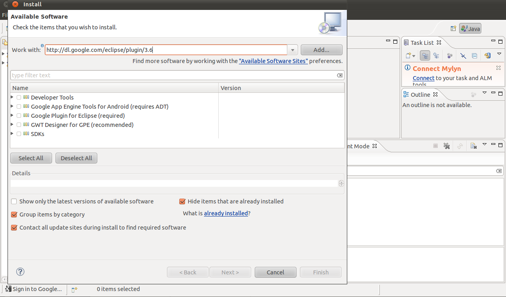
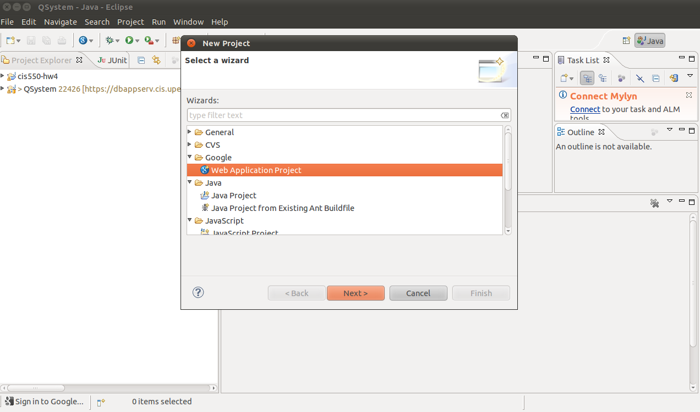
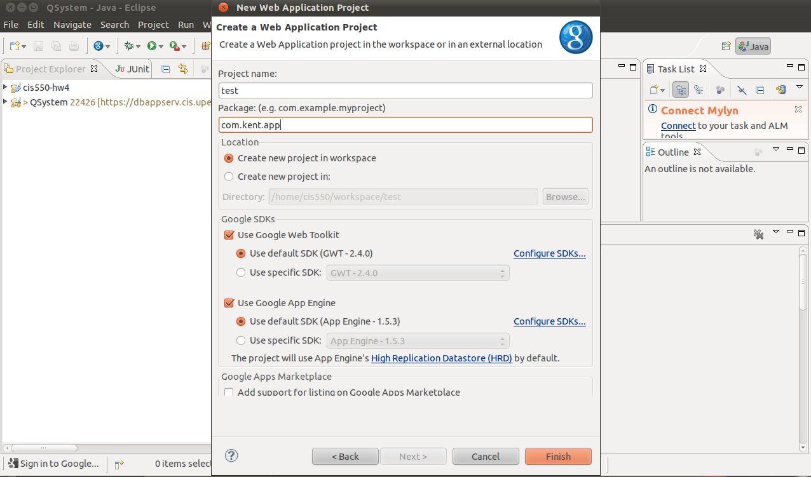
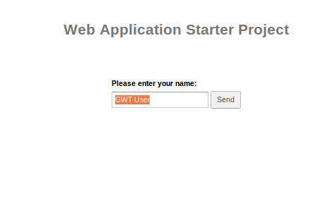
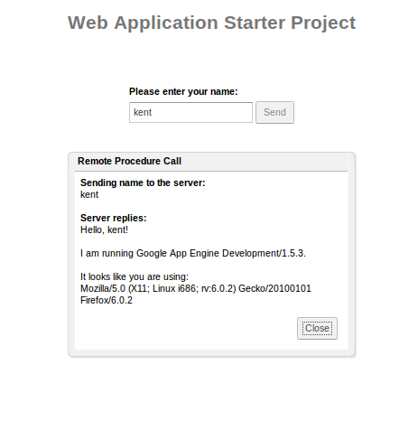

也紀念我們永遠的朋友 李士傑先生（Shih-Chieh Ilya Li）。
GWT (1) - 使用 GWT Eclipse Plugin 與 GWT 基礎架構
GWT 是一個由 Google 所開發的開源 AJAX 網路開發框架。由於許多傳統 Java 的開發人員及後端工程師，並不見得有前端工程師或網路開發者一樣的技術背景和經驗， 因此開發網站往往對他們來講有著陡峭的學習曲線。GWT 便是為了簡化開發人員使用 Java 作為橫跨前後端的技術整合及溝通之實作語言。
GWT 將 Java 作為開發的主要語言，因而 Java 的資源都成為 GWT 開發人員可以享受的工具。且團隊可以很輕易地找到會寫 Java 的開發者，亦可使用 Eclipse 的開發工具來實現 GWT。GWT 讓開發人員編寫 Java 代碼在透過 GWT 編譯器，把 Java 轉成高效的 JavaScript 代碼。GWT 的內建函式庫跟其所提供的框架延展性，讓開發人員可以快速地寫成互動性強的應用程式。
從本篇開始，筆者將開始連載一系列的 GWT 的相關文章.透過解說、實例、實作來幫助讀者了解 GWT。
作為系列文章的第一文，本文是熱身，將介紹一些 GWT 的入門知識，並帶領讀者使用 Google 所做的 Eclipse 外掛來實作運用 GWT。
安裝說明
先前有提到 GWT 因使用 Java 加上 Google 釋出的相關開發工具，而編寫 GWT 最便利的方式就是用在 Java 世界裡被廣泛使用的 Eclipse 開發環境。Eclipse 具有非常多內建的工具，加上它的套件管理系統跟維護社群，開發者可以很輕易的使用現有的工具來達到有效開發的目的。本文所使用的工具是 Eclipse 所以基本上只要環境支援 Eclipse 即可。以下範例將使用 Eclipse 3.6。
安裝 Eclipse
請先至 Eclipse 官網，依照您的作業系統下載安裝檔，並執行安裝，安裝過程相當容易，請依照安裝套件下一步即可。
若您的系統為 Ubuntu 即可使用以下指令直接安裝即可。
apt-get install eclipse
開啟相關套件
開啟 Eclipse，於上排功能列，選擇 [Help -> Install New Software] 將會開啟如下圖操作畫面，並於 Work with 欄位輸入以下網址 https://dl.google.com/eclipse/plugin/3.6。
▲ 圖1
若您的 Eclipse 的版本不是 3.6，則您可依具您的版本號輸入不同的網址。例如： 若為 Eclipse 3.5 則可輸入 https://dl.google.com/eclipse/plugin/3.5。 在短暫的搜尋之後，Eclipse 會列出幾個套件。為了簡化流程，讀者可以全部勾選。安裝好了以後，重啓 Eclipse 即可。
使用說明
以下的篇幅為說明 GWT 的基本架構跟用法。首先新創一個 "Web Application Project" 的專案。
▲ 圖2
輸入想要的專案名稱.本文將會用 test 這個名字。
▲ 圖3
Google 的 Eclipse Plugin 在生成新的專案時會產生一個範例專案。我們先試著執行這個專案以確定安裝程序都順利。若是一切都順利（設定維持預設），讀者應該可以開啓瀏覽器後輸入 "https://127.0.0.1:8888/Test.html?gwt.codesvr=127.0.0.1:9997"，即可看到以下畫面：
▲ 圖4
輸入名字後會看到以下畫面：
▲ 圖5
接下來，我們試著理解這個 GWT 專案是如何運作的。
開啟 Eclipse 的 Package Explorer 至您的專案下，以本專案 test 下的 src/com.kent.app.clent 開啓 Test.java。可以先注意到 Test 這個類別是實作 EntryPoint 這個介面。在一個 GWT 專案中，實作 EntryPoint 的類別會是第一個被載入的程式。從實作的函式 onModuleLoad 這個名稱就可以猜到一二。現在我們進入這個函式裡一探究竟。
曾經有 Java 使用者圖形界面 (GUI) 編程經驗的讀者，應該會對代碼有一定的熟悉感，因為 GWT 的內建函式庫有承襲一些 Java GUI 編程的規律。內建的 Button 類別在宣告以後，可以在傳入一個 ClickHandler 的類別來決定使用者按完按鈕後的後續動作。
在 GWT 裡，有一個叫做 RootPanel 的物件，此物件，在 GWT 主要用來放置各種界面工具 (widget)。透過 RootPanel.get("x").add(widget) 這行代碼，GWT 會把 widget 加到頁面上，更具體地說，加到HTML id 是 "x" 的地方 (主頁HTML的代碼可以在war這個資料夾下找到)。GWT 有各式各樣的內建界面工具可以使用，在本實作專案中我們只有用到少數幾個，有興趣的讀者可以自己玩玩看不同的工具。
最後，筆者將介紹一下 GWT 的 RPC (遠端過程調用)。作為一個網路應用程式，客戶端程式需要與伺服器溝通。 GWT 的 RPC 便是要讓應用程式透過 HTTP 交換 Java 物件的這個過程更加容易。您也許注意到這行代碼：
private final GreetingServiceAsync greetingService = GWT
.create(GreetingService.class);
此外，之後程序也有使用到 greetService 這個變數。這個便是應用到 RPC 的實例。在客戶端，開發者需要編寫 stub 函式，用意在於讓程式知道函式的各種輸入（請看GreetingServiceAsync.java）。實際的處理代碼則是編寫在伺服器端（見GreetingServiceImpl.java）。注意，這個伺服器端的代碼需要繼承 RemoteServiceServlet，然後，實作 GreetingService。
RemoteServiceServlet 的繼承使得程序員不需要處理序列化的問題而交由內建已經實做的類別來執行以增加開發效率跟降低出錯率。透過這樣的方式,開發人員能夠輕鬆寫出與伺服器互動的程序。
*以下是我的專案的代碼:
package com.kent.app.client;
import com.kent.app.shared.FieldVerifier;
import com.google.gwt.core.client.EntryPoint;
import com.google.gwt.core.client.GWT;
import com.google.gwt.event.dom.client.ClickEvent;
import com.google.gwt.event.dom.client.ClickHandler;
import com.google.gwt.event.dom.client.KeyCodes;
import com.google.gwt.event.dom.client.KeyUpEvent;
import com.google.gwt.event.dom.client.KeyUpHandler;
import com.google.gwt.user.client.rpc.AsyncCallback;
import com.google.gwt.user.client.ui.Button;
import com.google.gwt.user.client.ui.DialogBox;
import com.google.gwt.user.client.ui.HTML;
import com.google.gwt.user.client.ui.Label;
import com.google.gwt.user.client.ui.RootPanel;
import com.google.gwt.user.client.ui.TextBox;
import com.google.gwt.user.client.ui.VerticalPanel;
/**
* Entry point classes define onModuleLoad().
*/
public class Test implements EntryPoint {
/**
* The message displayed to the user when the server cannot be reached or
* returns an error.
*/
private static final String SERVER_ERROR = "An error occurred while "
+ "attempting to contact the server. Please check your network "
+ "connection and try again.";
/**
* Create a remote service proxy to talk to the server-side Greeting service.
*/
private final GreetingServiceAsync greetingService = GWT
.create(GreetingService.class);
/**
* This is the entry point method.
*/
public void onModuleLoad() {
final Button sendButton = new Button("Send");
final TextBox nameField = new TextBox();
nameField.setText("GWT User");
final Label errorLabel = new Label();
// We can add style names to widgets
sendButton.addStyleName("sendButton");
// Add the nameField and sendButton to the RootPanel
// Use RootPanel.get() to get the entire body element
RootPanel.get("nameFieldContainer").add(nameField);
RootPanel.get("sendButtonContainer").add(sendButton);
RootPanel.get("errorLabelContainer").add(errorLabel);
// Focus the cursor on the name field when the app loads
nameField.setFocus(true);
nameField.selectAll();
// Create the popup dialog box
final DialogBox dialogBox = new DialogBox();
dialogBox.setText("Remote Procedure Call");
dialogBox.setAnimationEnabled(true);
final Button closeButton = new Button("Close");
// We can set the id of a widget by accessing its Element
closeButton.getElement().setId("closeButton");
final Label textToServerLabel = new Label();
final HTML serverResponseLabel = new HTML();
VerticalPanel dialogVPanel = new VerticalPanel();
dialogVPanel.addStyleName("dialogVPanel");
dialogVPanel.add(new HTML("Sending name to the server:"));
dialogVPanel.add(textToServerLabel);
dialogVPanel.add(new HTML("Server replies:"));
dialogVPanel.add(serverResponseLabel);
dialogVPanel.setHorizontalAlignment(VerticalPanel.ALIGN_RIGHT);
dialogVPanel.add(closeButton);
dialogBox.setWidget(dialogVPanel);
// Add a handler to close the DialogBox
closeButton.addClickHandler(new ClickHandler() {
public void onClick(ClickEvent event) {
dialogBox.hide();
sendButton.setEnabled(true);
sendButton.setFocus(true);
}
});
// Create a handler for the sendButton and nameField
class MyHandler implements ClickHandler, KeyUpHandler {
/**
* Fired when the user clicks on the sendButton.
*/
public void onClick(ClickEvent event) {
sendNameToServer();
}
/**
* Fired when the user types in the nameField.
*/
public void onKeyUp(KeyUpEvent event) {
if (event.getNativeKeyCode() == KeyCodes.KEY_ENTER) {
sendNameToServer();
}
}
/**
* Send the name from the nameField to the server and wait for a response.
*/
private void sendNameToServer() {
// First, we validate the input.
errorLabel.setText("");
String textToServer = nameField.getText();
if (!FieldVerifier.isValidName(textToServer)) {
errorLabel.setText("Please enter at least four characters");
return;
}
// Then, we send the input to the server.
sendButton.setEnabled(false);
textToServerLabel.setText(textToServer);
serverResponseLabel.setText("");
greetingService.greetServer(textToServer,
new AsyncCallback() {
public void onFailure(Throwable caught) {
// Show the RPC error message to the user
dialogBox
.setText("Remote Procedure Call - Failure");
serverResponseLabel
.addStyleName("serverResponseLabelError");
serverResponseLabel.setHTML(SERVER_ERROR);
dialogBox.center();
closeButton.setFocus(true);
}
public void onSuccess(String result) {
dialogBox.setText("Remote Procedure Call");
serverResponseLabel
.removeStyleName("serverResponseLabelError");
serverResponseLabel.setHTML(result);
dialogBox.center();
closeButton.setFocus(true);
}
});
}
}
// Add a handler to send the name to the server
MyHandler handler = new MyHandler();
sendButton.addClickHandler(handler);
nameField.addKeyUpHandler(handler);
}
}
結論
本文介紹了 GWT 的一些相關知識以及基本的運作結構。透過 GWT，開發人員可以利用 Java 編寫前端跟後端的代碼。這使得代碼的統一性比混合式的架構更好。
後續
下次，筆者將帶讀者實踐一個利用更多 GWT 函式庫的專案。
參考資料
- GWT 官方網站
https://developers.google.com/web-toolkit/ - GWT RPC 官方介紹
https://developers.google.com/web-toolkit/doc/latest/tutorial/RPC
Special


Address：No.128, Sec.2, Academia Rd., Institute of Information Science, Academia Sinica, Nangang District, Taipei City 11529, Taiwan (R.O.C).
Privacy Policy. Terms-of-use

Comments
127.0.0.1:8888/.../
就可得到測試首頁
但似乎少了一點說明
如何啟動dev_appserv er並關聯到test web project 不然web server如何知道test project
在哪裡 還望你做說明 謝謝